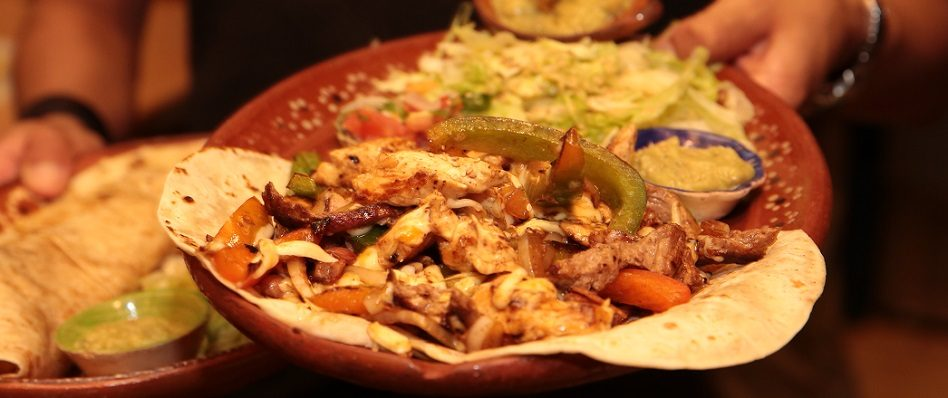
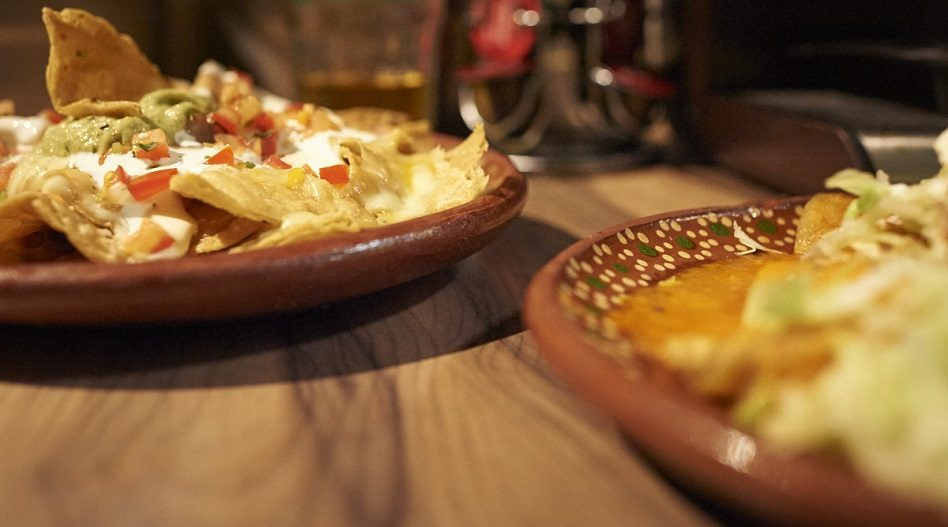
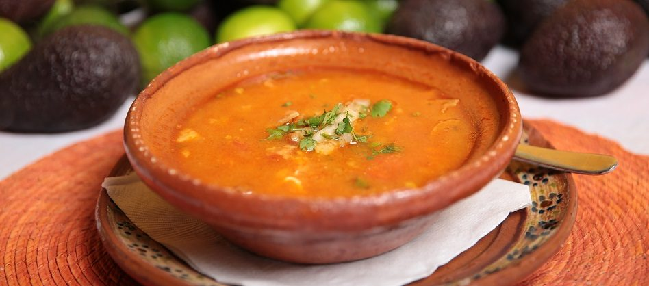
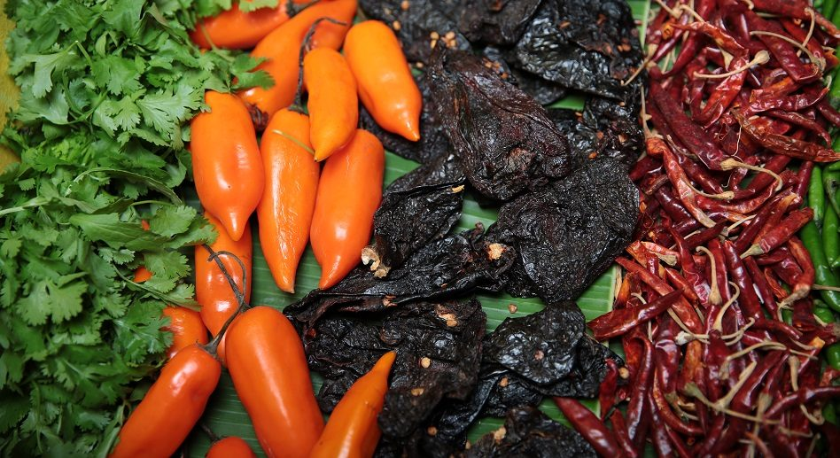
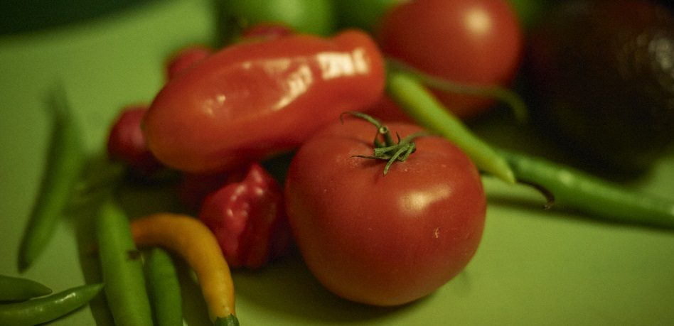
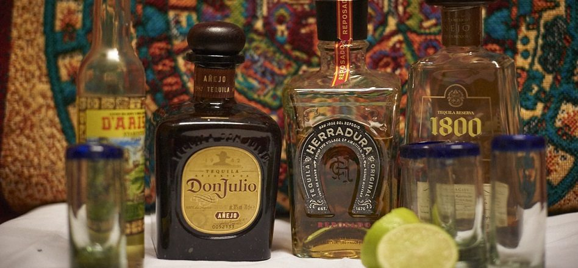

Tacos al pastor
Maistortilla mit Schweinefleisch von der Lende, mariniert nach mexikanischer Art — die besondere Spezialität für unsere Gäste an Freitagen und Samstagen.
€ 3,50
In den ersten authentisch mexikanischen Restaurants Wiens und österreichweit — in der Taquería und im Antojitos „Los Mexikas“ — entführt Sie Chef Mauricio Aceves Omaña, Mexikaner und leidenschaftlicher Koch, täglich auf eine Reise durch die kulinarischen Genüsse Mexikos.
Original mexikanische Gerichte wie Tacos al pastor, Consomé de barbacoa, Huaraches, Enchiladas und vegetarische Variationen werden frisch vor Ihren Augen zubereitet. Die typisch mexikanischen Getränke machen den Genuss komplett. ¡Buen provecho!

Telefonische Reservierung: +43 1 406 08 71
Telefonische Reservierung: +43 1 212 25 61
Alles frisch zubereitet, vieles vor Ihren Augen. Die vollständige Karte mit allen Preisen und Allergenen finden Sie auf der Carta.
Maistortilla mit Schweinefleisch von der Lende, mariniert nach mexikanischer Art — die besondere Spezialität für unsere Gäste an Freitagen und Samstagen.
€ 3,50
Köstliche Lammsuppe auf mexikanische Art — kräftig, würzig und über Stunden gezogen.
€ 8,00
Taquitos de suadero, Taquitos de longaniza, Alambre und Quesadilla, serviert mit Salat, drei würzigen Dips und Tequila.
€ 23,00



Huaraches sind Maisteig-Gerichte, wie sie in Mexiko schon vor der Ankunft der Spanier gegessen wurden: gegrillter Maisteig mit grüner Sauce, Sauerrahm, Avocadocreme und Schafskäse — mit Longaniza, Hühnerfleisch, Rindfleisch oder vegetarisch mit Gemüse der Saison und Kaktustrieben.
Dazu Gringas — gefüllte Weizentortillas mit Käse, Bistec, Chorizo, Pollo oder vegetarisch — und Enchiladas in drei Saucen: verdes, rojas und mole mit Erdnuss-Kakao-Sauce.

Horchata aus Reis, Jamaica aus Hibiskusblüten, Tamarindo — dazu mexikanische Biere, Micheladas mit Chile piquín und Tabasco, Tequila blanco, reposado und añejo sowie Mezcales.

Horchata, Tamarindo, Jamaica, frische Frucht- und Gemüsesäfte sowie das Agua del día — je 0,5 l um € 4,50.
Corona, Negra Modelo, Sol und Pacífico je € 5,50, Chelada € 6,00, Michelada € 6,50, Mexichelada € 7,00. Cubetazo mit fünf Bieren: € 25,–.
Weißer Tequila, Añejo, Reposado und Mezcales; Cocktails wie Margarita, Mojito, Coco Loco, Piña Colada, Tequila Sunrise und Daiquiri. Dazu Weine, Café und Tee.
Taquería 1080: +43 1 406 08 71 · Antojitos 1020: +43 1 212 25 61